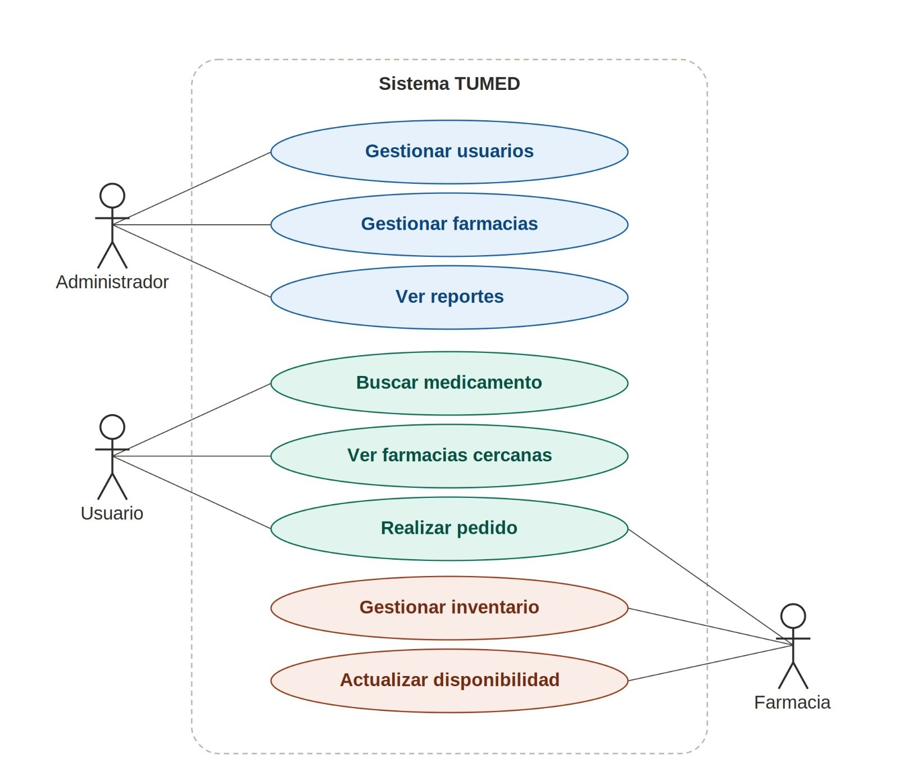
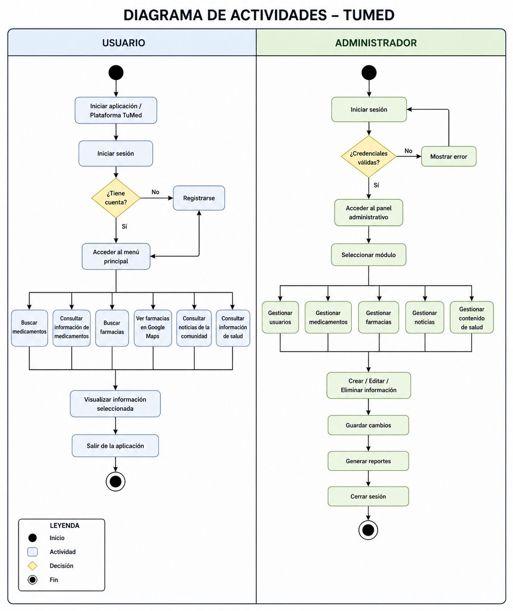
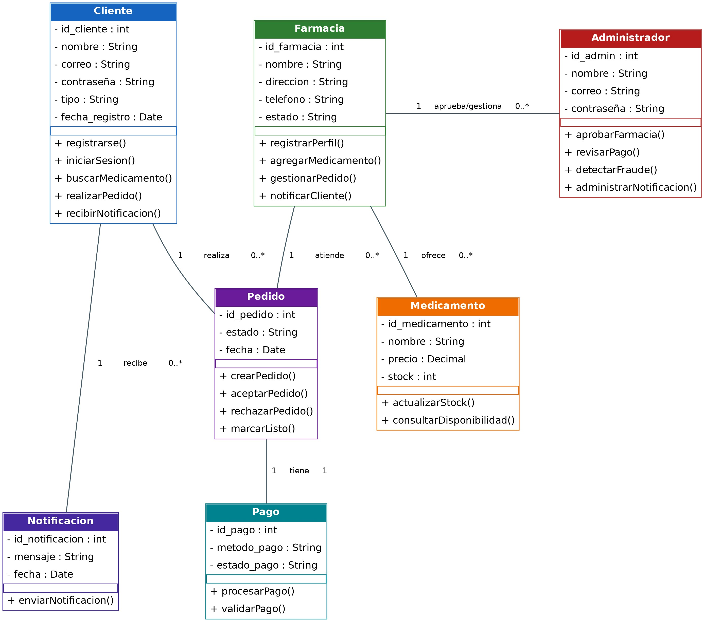
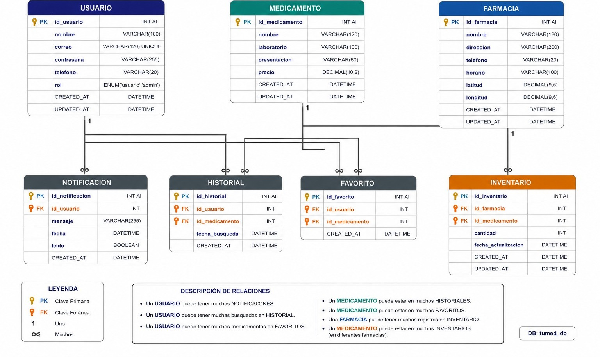
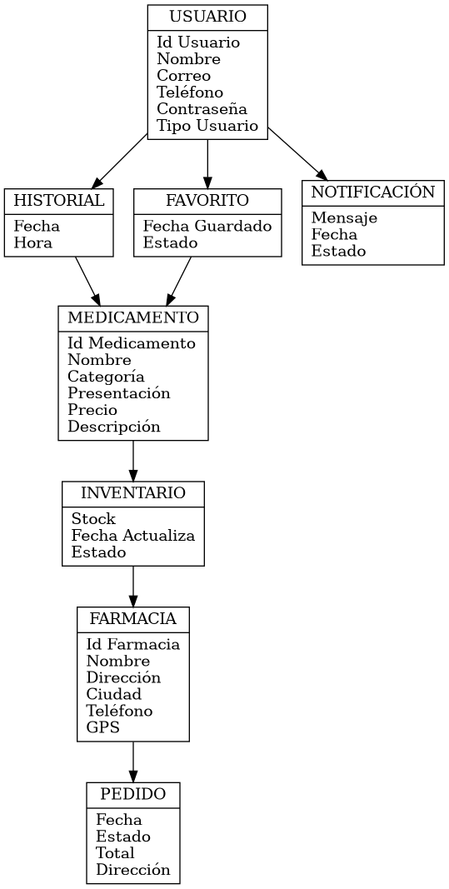
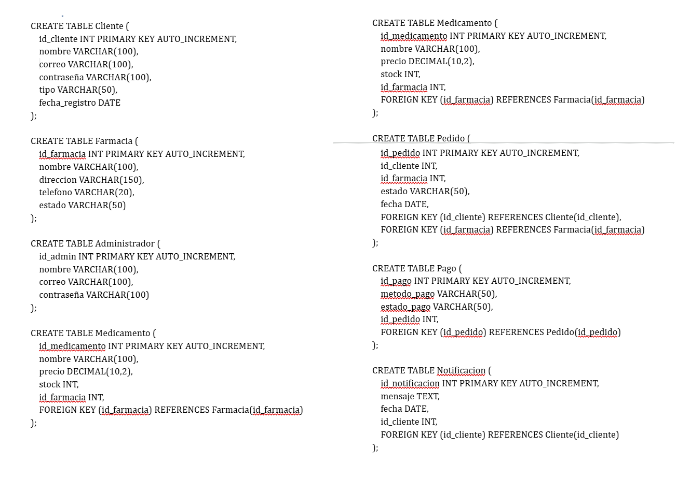
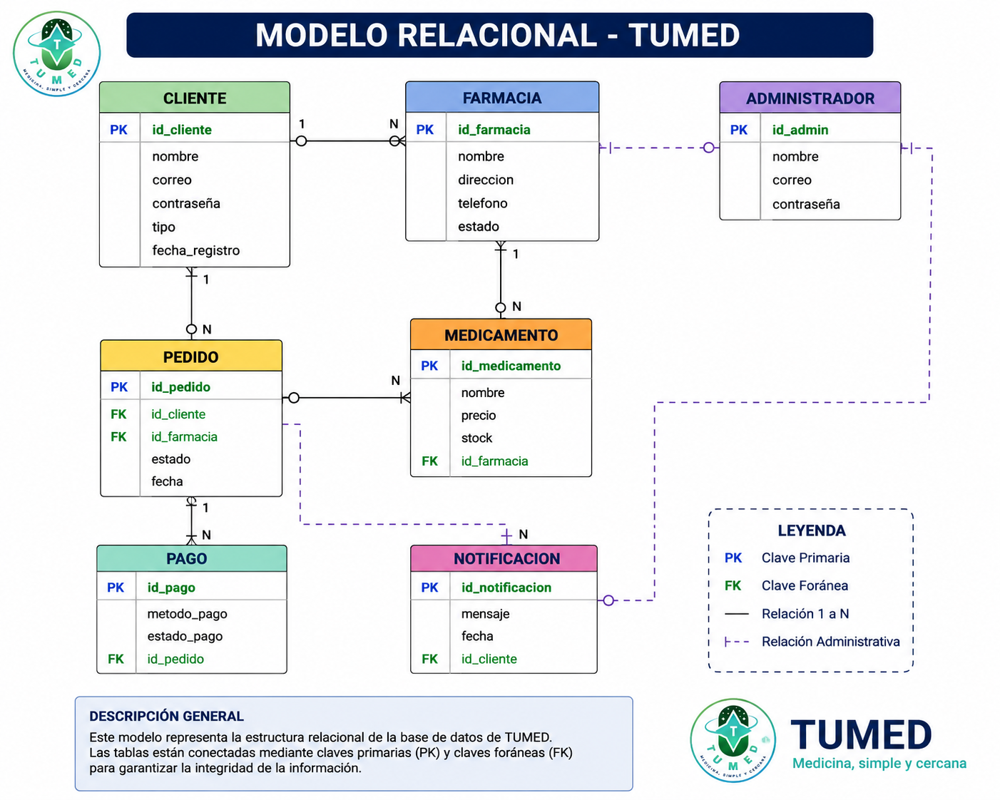
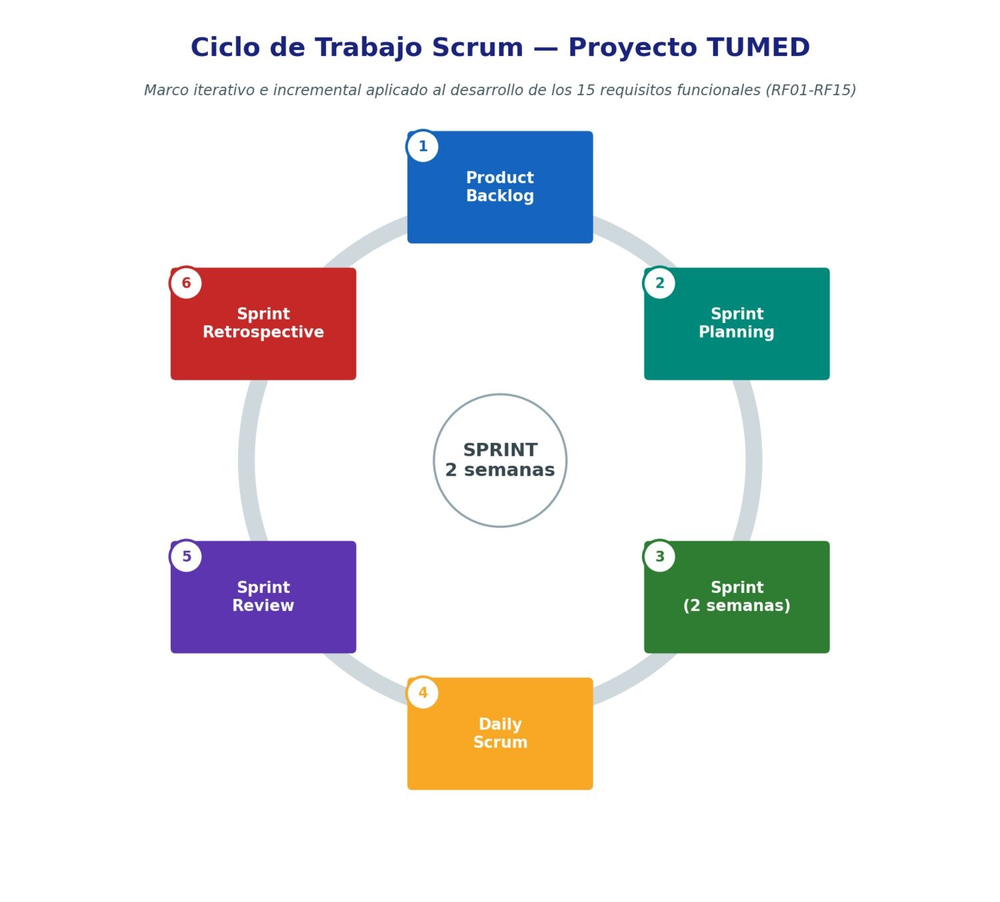

Tu salud, más cerca
TUMED conecta a las personas con las farmacias y droguerías más cercanas que tienen disponible el medicamento que necesitan, en tiempo real y con una interfaz pensada para todas las edades. y especialmente para el adulto mayor, que muchas veces debe recorrer varias farmacias sin saber si el medicamento que busca está realmente disponible.
Encontrar un medicamento no debería tomar toda la tarde
Es común tener que recorrer varias farmacias para encontrar un medicamento disponible, especialmente para los adultos mayores, que muchas veces deben desplazarse sin saber si el lugar al que llegan realmente lo tiene en inventario.
TUMED reúne en un solo lugar la consulta de medicamentos, la ubicación de las farmacias y el estado real de sus inventarios, para que esa búsqueda se resuelva desde el celular antes de salir de casa.
¿Cómo saber, sin salir de casa, qué farmacia cercana tiene disponible el medicamento que necesito en este momento?
Hacia dónde apunta TUMED
Desarrollar una plataforma web denominada TUMED que facilite a los adultos mayores la búsqueda de medicamentos, la consulta de su disponibilidad en farmacias cercanas, el seguimiento de tratamientos y la recepción de notificaciones sobre disponibilidad o agotamiento de medicamentos, proporcionando una herramienta accesible, intuitiva y confiable que contribuya a mejorar el acceso a la información y la continuidad de los tratamientos médicos.
Ocho metas para lograrlo
Cada objetivo específico responde a una necesidad concreta identificada en el análisis del proyecto TUMED.
Interfaz accesible y amigable
Iconografía de gran tamaño, colores de alto contraste, tipografía legible y navegación sencilla para adultos mayores.
Búsqueda de medicamentos
Buscador inteligente con disponibilidad, presentación, laboratorio y farmacias donde encontrarlos.
Geolocalización de farmacias
Visualiza las farmacias más cercanas con dirección, horario, distancia y disponibilidad.
Seguimiento de medicamentos
Guarda medicamentos de interés y consulta el historial de búsquedas frecuentes.
Alertas y notificaciones
Avisos automáticos sobre disponibilidad, agotamiento o cambios relevantes.
Gestión de información
Los administradores registran y actualizan medicamentos, inventarios y farmacias.
Seguridad de la información
Autenticación y control de acceso que protegen los datos personales de los usuarios.
Consulta optimizada
Reduce el tiempo para localizar un medicamento y facilita la toma de decisiones.
Todo lo necesario para encontrar tu medicamento
Una sola plataforma que une a usuarios y farmacias, con funciones pensadas para resolver la búsqueda real de medicamentos, no solo mostrar información.
Búsqueda inteligente
Encuentra medicamentos por nombre, categoría, precio o disponibilidad, con información actualizada de presentación, laboratorio y farmacias donde puedes encontrarlos.
Búsqueda y filtradoFarmacias cerca de ti
Visualiza en un mapa interactivo las farmacias más próximas, con dirección, horario de atención, distancia y disponibilidad del medicamento que estás buscando.
Geolocalización GPSBúsqueda por voz
Pensada especialmente para personas adultas mayores: basta con hablar para buscar un medicamento, sin necesidad de escribir ni navegar por menús complejos.
AccesibilidadNotificaciones y seguimiento
Recibe avisos cuando un medicamento vuelva a estar disponible o esté próximo a agotarse, y guarda los que usas con frecuencia para encontrarlos más rápido la próxima vez.
Alertas de disponibilidadPanel para farmacias
Cada farmacia registrada administra su propio inventario en tiempo real, junto con su ubicación, datos de contacto y horarios, manteniendo la información siempre confiable.
Gestión de inventarioDe la búsqueda al medicamento en tres pasos
Un flujo corto y directo, igual de simple para un usuario frecuente que para alguien que usa la aplicación por primera vez.
Busca tu medicamento
Escribe el nombre o usa la búsqueda por voz. TUMED muestra presentación, laboratorio y disponibilidad al instante.
Localiza la farmacia
Revisa en el mapa qué farmacias cercanas lo tienen disponible ahora mismo, con distancia y horario de atención.
Recíbelo o recógelo
Dirígete directo a la farmacia, ya con la disponibilidad confirmada.
Tres roles, una misma plataforma
TUMED organiza el sistema alrededor de tres tipos de usuario, cada uno con herramientas adaptadas a lo que necesita hacer.
Usuario
Busca medicamentos, localiza farmacias cercanas y hace seguimiento a lo que necesita comprar.
- Búsqueda por texto o por voz
- Historial y medicamentos frecuentes
- Calificación de farmacias
Farmacia
Registra su droguería, mantiene el inventario al día y atiende los pedidos que recibe desde la app.
- Gestión de inventario en tiempo real
- Ubicación, horario y contacto
- Recepción de pedidos
Administrador
Supervisa usuarios, farmacias y reportes, manteniendo la información de la plataforma actualizada y confiable.
- Gestión de usuarios y farmacias
- Reportes del sistema
- Control de acceso y seguridad
Diagramas de TUMED
El modelado UML representa gráficamente la estructura, el comportamiento y las relaciones de la plataforma antes de la etapa de desarrollo.

Diagrama de casos de uso
El color agrupa los casos de uso por actor: azul para Administrador, verde azulado para Usuario y coral para Farmacia. Fíjate que "Realizar pedido" tiene una línea extra conectada a Farmacia, porque es un caso de uso compartido: el Usuario lo inicia y la Farmacia lo recibe.

Diagrama de actividades
Muestra el flujo de trabajo de los procesos principales, desde el inicio de sesión hasta la búsqueda de medicamentos por parte del usuario y la gestión de módulos por parte del administrador.

Diagrama de clases
Representa la estructura estática del sistema: clases como Usuario, Medicamento, Farmacia, Inventario y Notificación, con sus atributos, métodos y relaciones.
Capa de presentación
App móvil y panel web. Interfaz diseñada en Figma con principios de accesibilidad para adultos mayores.
Capa de lógica de negocio
Valida datos, procesa búsquedas, consulta disponibilidad y gestiona notificaciones y permisos.
Capa de datos
Base de datos MySQL: usuarios, medicamentos, farmacias, inventarios, historial y notificaciones.
Arquitectura cliente–servidor de tres capas
Cada capa cumple una función específica, reduciendo el acoplamiento entre la interfaz, la lógica del sistema y el almacenamiento de datos. Ver el detalle completo en la sección Arquitectura.

Modelo Entidad–Relación (MER)
Representa gráficamente las entidades principales del sistema —Usuario, Medicamento, Farmacia, Inventario, Notificación, Historial y Favorito— y las relaciones existentes entre ellas.

Modelo lógico
Define las tablas, atributos, claves primarias y foráneas, y las relaciones entre entidades, independientemente del motor de base de datos que se use para implementarlas.

Modelo físico
Traduce el modelo lógico a la estructura real implementada en MySQL, con tipos de dato, índices, restricciones y nombres definitivos de tablas y columnas.

Modelo relacional
Transforma el modelo entidad-relación en las tablas implementadas en MySQL, con sus claves primarias, foráneas y tipos de dato definidos en el diccionario de datos.
Toca cualquier diagrama para verlo en tamaño completo.
Arquitectura, patrones y estándares
Arquitectura cliente-servidor de tres capas, patrones de diseño, estándares de codificación, metodología Scrum y manual de marca aplicados durante el desarrollo del proyecto.
Presentación
Interfaz de usuario: muestra información, captura datos, presenta resultados y mapas, y gestiona la navegación entre pantallas.
Lógica de negocio
Valida información, procesa búsquedas, consulta disponibilidad, administra notificaciones y controla permisos por rol.
Datos
Almacenamiento permanente en MySQL: usuarios, administradores, medicamentos, farmacias, inventarios y notificaciones.
Flujo general
- El usuario accede a la plataforma TUMED.
- La interfaz recibe la solicitud.
- La solicitud se envía al servidor.
- El servidor valida la información.
- Se consulta la base de datos.
- La información es procesada.
- El servidor genera una respuesta.
- La interfaz presenta los resultados al usuario.
Arquitectura de tres capas
Separa la interfaz, la lógica de negocio y el acceso a los datos.
Cliente–servidor
Los usuarios acceden a la información almacenada en el servidor mediante una conexión segura.
CRUD
Creación, consulta, actualización y eliminación sobre usuarios, farmacias y medicamentos.
MVVM · MVC · Repository/DAO
Patrones de diseño que separan responsabilidades en el código, junto con Observer y Factory Method.
Seguridad de la arquitectura
Autenticación mediante usuario y contraseña.
Control de acceso basado en roles (Administrador y Usuario).
Cifrado de contraseñas y validación de datos de entrada.
Copias de seguridad periódicas de la información.
Tecnologías utilizadas
Convenciones de nombramiento
Variables
camelCase — nombreUsuario, fechaRegistro.
Funciones
Verbos de acción — buscarMedicamento(), enviarNotificacion().
Clases
PascalCase — Usuario, Medicamento, Farmacia.
Base de datos
Nombres claros en minúscula — medicamento, historial_busqueda.
Buenas prácticas de codificación
Nombres descriptivos para variables, funciones y clases.
Organización modular del código por funcionalidad.
Validación de datos ingresados por los usuarios.
Reutilización de componentes y diseño adaptable.

Roles del equipo Scrum
| Rol | Función en TUMED |
|---|---|
| Scrum Master | Coordina sprints, elimina obstáculos y vela por las ceremonias ágiles. |
| Product Owner | Prioriza los requisitos RF01–RF15 y representa la voz del usuario. |
| Equipo de desarrollo | Analiza, diseña, implementa y documenta cada requisito del sprint. |
Cinco sprints de dos semanas permiten entregar de forma incremental los 15 requisitos funcionales de la ERS en un plazo estimado de 19 semanas.
Nombre TUMED, propósito de conectar personas con farmacias cercanas y eslogan “tu salud, más cerca”: una frase corta, cálida y fácil de leer para todo tipo de usuario.
El logotipo de TUMED
El nombre TUMED surge de unir "tu" y "medicamento", una forma de dejar claro desde el nombre mismo que la plataforma está construida alrededor del usuario y no de la farmacia. El símbolo que acompaña el nombre retoma la cruz, señal universal de salud, dibujada con trazo grueso para que se mantenga legible incluso en tamaños pequeños o para personas con baja visión.
La paleta del logotipo combina el Verde Salud (#00A99D) con el Azul Tecnología (#1565C0): el primero conecta con el bienestar y la atención médica, el segundo con la confiabilidad de la plataforma. Ambos tonos se eligieron también por su alto contraste, uno de los principios centrales del proyecto, pensado especialmente para que los adultos mayores puedan identificar la marca sin esfuerzo.
La tipografía acompaña esa misma intención: Poppins en los títulos aporta un trazo redondeado y cercano, mientras Noto Sans en los textos de cuerpo prioriza la legibilidad en pantallas pequeñas. Esa combinación de cercanía visual y claridad es la que finalmente resume el eslogan de la marca: "tu salud, más cerca".
Así se ve TUMED en Figma
Un prototipo navegable, en versión web y móvil, que muestra cómo se resuelve cada pantalla antes de pasar al código.
El prototipo recorre el flujo completo de un usuario: desde que abre la aplicación hasta que encuentra su medicamento en una farmacia cercana, además de las pantallas de gestión que usa el administrador.
- Pantallas de inicio de sesión y registro de usuario
- Búsqueda de medicamentos y resultados de disponibilidad
- Mapa con las farmacias cercanas y su información
- Perfil, historial y notificaciones del usuario
- Panel administrativo para gestionar farmacias y medicamentos
- Versión web y versión móvil del mismo flujo
Tu salud, más cerca de lo que crees
TUMED es un proyecto formativo del SENA que busca facilitar el acceso a medicamentos para toda la familia, con especial atención a los adultos mayores.